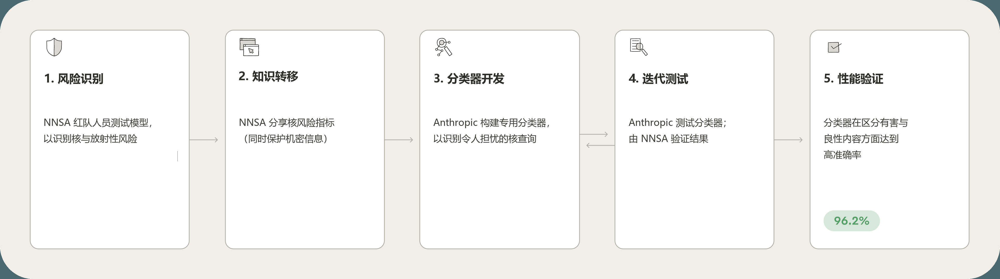
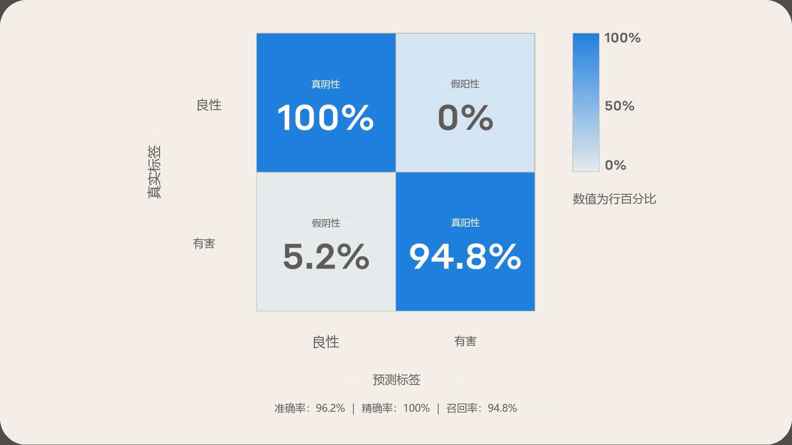

为AI开发核安全防护
📖 中文摘要
专业术语注解
分类器：自动把内容归类（如有害或良性）的AI系统合成数据：人为生成、模拟真实场景的测试数据红队：由安全专家扮演攻击者测试系统弱点误报：把无害内容错误地标记为有害核扩散：核武器技术或材料向更多国家或行为体扩散📄 中文全文
- 分类： 前沿红队（Frontier Red Team）
- 来源： https://www.anthropic.com/research/nuclear-safeguards-for-ai
前沿红队 2025年8月21日 核技术本质上具有双重用途：为核反应堆提供动力的同一物理原理也可能被滥用于武器开发。随着 AI 模型变得更有能力，我们需要密切关注它们是否能够以可能威胁国家安全的方式向用户提供危险的技术知识。 与核武器相关的信息尤其敏感，这使得一家私营公司单独评估这些风险具有挑战性。这就是为什么去年 4 月我们与美国能源部（DOE）的国家核安全管理局（NNSA）合作，评估我们模型的核扩散风险，并继续与他们合作进行这些评估。 现在，我们正超越风险评估，构建监控风险所需的工具。我们与 NNSA 和 DOE 国家实验室共同开发了一个分类器——一种自动对内容进行分类的 AI 系统——在初步测试中，它能以 96% 的准确率区分令人担忧和良性的核相关对话（详见下文）。 我们已经把这个分类器部署到 Claude 流量上，作为我们识别模型滥用行为的更广泛系统的一部分。早期部署数据表明，该分类器在真实的 Claude 对话中表现良好。 我们将把我们的方法分享给 前沿模型论坛——前沿 AI 公司的行业机构——希望这种合作能成为任何 AI 开发者都可以效仿的蓝图，让他们与 NNSA 合作实施类似的保障措施。 1 除了保护前沿 AI 模型免受核滥用的具体重要性之外，这项首创性的努力还展示了公私合作伙伴关系的力量。这些合作结合了产业界和政府的互补优势，直面风险，使 AI 模型对所有用户都更可靠、更值得信赖。
我们构建了什么
在这次合作中，我们没有止步于识别风险——我们开发了一种应对风险的方法。在 NNSA 工作人员在安全环境中对 Claude 模型进行了一年红队测试之后，我们开始共同开发风险缓解措施。 根据他们的红队测试，NNSA 与我们分享了一份精心策划的核风险指标清单，旨在把关于核武器开发的潜在令人担忧的对话与关于核能、医学或政策的良性讨论区分开来。至关重要的是，这份清单是在一个可以与我们团队共享的密级下制定的，使我们能够用它来构建防御措施。 我们的政策和保障团队把这份清单变成了一个能够实时识别令人担忧的核查询的分类器。可以把分类器想象成一个专门的标注器，就像你电子邮件收件箱里支撑垃圾邮件过滤器的那个一样。它不是识别垃圾邮件，而是识别潜在有害的对话，同时允许合法的讨论继续。 为了验证这个系统，我们生成了数百个合成测试提示词——有些令人担忧，有些良性——让它们通过分类器，并与 NNSA 分享结果。NNSA 验证了分类器得分与预期标签（即有害或良性）一致。然后我们根据他们的反馈完善方法，并重复这个循环来提高精度。图 1 总结了这一过程。

图 1：分类器共同开发过程。 这项努力最具挑战性的方面不是技术性的——而是弥合国家安全机构与私营 AI 公司之间的差距。双方都必须在信息共享约束下运作：NNSA 需要保守某些信息的机密性，Anthropic 需要保护用户数据。那么，我们如何验证我们的分类器确实有效呢？合成数据生成是我们的解决方案：我们使用 NNSA 的示例提示词生成了数百个测试案例，在不损害任何一方权益的情况下创建了一个稳健的评估集。这为什么重要？
如果 AI 系统过于谨慎，它可能会拒绝合法的核工程课程。如果过于宽松，它可能无意中协助坏人。 我们的分类器似乎取得了正确的平衡。在使用合成数据的初步测试中，我们实现了对核武器查询 94.8% 的检测率和零误报（总体而言，这次测试中分类器的标签有 96.2% 是准确的，如图 2 所示），这表明该系统不会把合法的教育、医学或研究讨论标记为令人担忧。这种精度很重要，因为 AI 系统中的核对话虽然罕见，但风险极高——它们直接关系到国家安全。

图 2：分类器对合成交流的评估与其已知状态的比较，显示对所有真阴性案例的正确评估和近 95% 的真阳性案例的正确评估。总体准确率反映了正确预测标签的总比例。与行业分享
我们正在提供这些资源，以便其他领先的 AI 公司如果愿意，可以实施类似的保障措施。除了展示政府专业知识如何通过自愿的公私合作增强 AI 安全之外，我们希望这能引发一场交流，让我们能够相互学习彼此的缓解风险方法。
接下来是什么？
如上所述，我们已经把分类器作为我们保障框架的一个实验性补充部署，监控一部分 Claude 流量。它的现实世界表现证实，分类器在我们的测试环境之外也有效。虽然我们的合成测试数据提供了有害和良性交流的清晰示例，但实际用户流量的分布被证明更复杂、更令人惊讶，但分类器仍然表现良好。 现实世界部署与测试不同，一个例子是分类器标记了一些我们最终确定为良性的关于核武器的对话。例如，中东的近期事件使核武器问题重新受到关注。在这段时间里，核分类器错误地标记了一些只与这些事件相关、而非实际滥用企图的对话。我们发现，当这些交流经过分层摘要——即把多个被标记的对话放在一起审查——时，由于摘要步骤提供的额外上下文，它们被正确识别为无害的时事讨论。 这揭示了两种动态：第一，现实世界的对话往往落入难以在合成数据中捕捉的灰色地带；第二，组合多个安全工具会创造一个更细致、更精确的系统。 归根结底，分类器在部署时成功捕捉到令人担忧的内容（即真阳性），证明了它的价值。例如，不知道分类器已部署的 Anthropic 红队成员正在使用故意令人担忧的提示词对我们的系统进行常规对抗性测试。分类器正确识别出这些测试查询可能有害，展示了它的有效性。 这项工作利用了各方的优势（即政府的领域专业知识和产业界的技术能力），早期结果表明它在实践中行之有效。这展示了一种可以在其他国家安全领域复制的公私合作模式。它也说明，产业界现在可以采取措施来实施有意义的保障措施。 我们感谢 NNSA 和 DOE 国家实验室团队对这次合作的投入，它展示了产业界和政府如何携手增强国家安全。 关于我们安全举措的更多信息，请参阅我们的 负责任扩展政策、前沿红队 和_保障工作。_
脚注
- 我们之所以能够分享这类信息，是因为 FMF 成员公司（即 Amazon、Anthropic、Google、Meta、Microsoft 和 OpenAI）签署了一项独特的协议，旨在促进关于前沿 AI 特有的威胁、漏洞和能力进展的信息共享。
相关内容
了解更多关于 Claude 的数学能力
Claude 的一个未发布研究版本在与黎曼猜想相关的问题上取得了进展。它改进了一个长期存在的下界——满足该猜想的黎曼 zeta 函数零点比例的下界——将其从 41.6% 提高到 67.2%。 阅读更多
用 Claude 发现密码学弱点
密码算法。第一个攻击显著削弱了 HAWK——一种为未来量子计算机能够破解现有标准的时代而设计的数字签名方案。第二个攻击确定了一种攻击减轮 AES（最广泛使用的对称密码）的新方法。 阅读更多
Project Pilot：AI 能控制无人机吗？
我们与 Andon Labs 合作，开发了一系列评估 AI 模型使用飞行无人机能力的新评估，最终形成一个新的基准：Drone-Bench。 阅读更多
订阅前沿红队通讯
获取我们最新的红队研究和发现更新。
▸ 英文原文（点击展开）
Developing nuclear safeguards for AI
- Category: Frontier Red Team
- Source: https://www.anthropic.com/research/nuclear-safeguards-for-ai
Frontier Red Team
Developing nuclear safeguards for AI
Aug 21, 2025 Nuclear technology is inherently dual-use: the same physics principles that power nuclear reactors can be misused for weapons development. As AI models become more capable, we need to keep a close eye on whether they can provide users with dangerous technical knowledge in ways that could threaten national security. Information relating to nuclear weapons is particularly sensitive, which makes evaluating these risks challenging for a private company acting alone. That’s why last April we partnered with the U.S. Department of Energy (DOE)’s National Nuclear Security Administration (NNSA) to assess our models for nuclear proliferation risks and continue to work with them on these evaluations. Now, we’re going beyond assessing risk to build the tools needed to monitor for it. Together with the NNSA and DOE national laboratories, we have co-developed a classifier —an AI system that automatically categorizes content—that distinguishes between concerning and benign nuclear-related conversations with 96% accuracy in preliminary testing (see below for details). We have already deployed this classifier on Claude traffic as part of our broader system for identifying misuse of our models. Early deployment data suggests the classifier works well with real Claude conversations. We will share our approach with the Frontier Model Forum, the industry body for frontier AI companies, in hopes that this partnership can serve as a blueprint that any AI developer can use to implement similar safeguards in partnership with NNSA. 1 Along with the concrete importance of securing frontier AI models against nuclear misuse, this first-of-its-kind effort shows the power of public-private partnerships. These partnerships combine the complementary strengths of industry and government to address risks head-on, making AI models more reliable and trustworthy for all their users.
What we built
In this partnership, we did not stop with identifying risks—we developed an approach for addressing them. After a year of NNSA staff red teaming Claude models in a secure environment, we began to co-develop risk mitigations.
Informed by their red teaming, NNSA shared with us a carefully curated set of nuclear risk indicators designed to distinguish potentially concerning conversations about nuclear weapons development from benign discussions about nuclear energy, medicine, or policy. Crucially, this list was developed at a classification level such that it could be shared with our team, allowing us to use it to build defenses.
Our Policy and Safeguards teams turned that list into a classifier that could identify concerning nuclear queries in real-time. Think of a classifier as a specialized labeller, like the one that underpins the spam filter in your email inbox. Instead of identifying junk mail, this classifier identifies conversations that are potentially harmful while allowing legitimate discussions.
To validate the system, we generated hundreds of synthetic test prompts—some concerning, some benign—ran them through the classifier, and shared the results with the NNSA. NNSA validated that the classifier scores aligned with the expected labels (i.e., harmful or benign). We then refined the approach based on their feedback, and repeated the cycle to improve precision. Figure 1 summarizes this process.
Figure 1: Classifier co-development process.
The most challenging aspect of this endeavor wasn’t technical—it was bridging the gap between a national security agency and a private AI company. Both sides had to operate under information sharing constraints: the NNSA needed to keep certain information classified, and Anthropic needed to protect user data. How, then, could we validate that our classifier actually worked? Synthetic data generation was our solution: we used example prompts from NNSA to generate hundreds of test cases, creating a robust evaluation set without compromising either party’s equities.
Why does this matter?
If an AI system is too cautious, it might refuse legitimate nuclear engineering coursework. Too permissive, and it could inadvertently assist bad actors.
Our classifier appears to strike the right balance. In preliminary testing with synthetic data, we achieved a 94.8% detection rate for nuclear weapons queries and zero false positives (overall, 96.2% of the classifier’s labels in this test were accurate as shown in Figure 2), suggesting this system would not flag legitimate educational, medical, or research discussions as concerning. This precision matters because nuclear conversations in AI systems are rare but high-stakes—they bear directly on national security.
Figure 2: Comparison of the classifier’s assessment of synthetic exchanges to their known status showing correct assessment of all the true negatives and almost 95% of the true positives. The overall accuracy reflects the total proportion of correctly predicted labels.
Sharing with industry
We’re making these resources available so that other leading AI companies can implement similar safeguards if they choose. Beyond demonstrating how government expertise can enhance AI safety through voluntary public-private cooperation, we hope this sparks an exchange where we can learn from each other’s approaches to risk mitigation.
What’s next?
As noted above, we have deployed the classifier as an experimental addition to our Safeguards framework, monitoring a percentage of Claude traffic. Its real-world performance has confirmed that the classifier works effectively beyond our testing environment. Whereas our synthetic test data provided clear examples of harmful and benign exchanges, the distribution of actual user traffic proved more complex and surprising, yet the classifier still performed well. One example of how real-world deployment differs from testing is that the classifier flagged certain conversations about nuclear weapons that we ultimately determined to be benign. For example, recent events in the Middle East brought renewed attention to the issue of nuclear weapons. During this time, the nuclear classifier incorrectly flagged some conversations that were only related to these events, not actual misuse attempts. We found that when these exchanges went through hierarchical summarization—which reviews multiple flagged conversations together—they were correctly identified as harmless current events discussions because of the additional context provided by the summarization step. This reveals two dynamics: first, that real-world conversations often fall into gray areas that are difficult to capture in synthetic data, and second, that combining multiple safety tools creates a more nuanced and precise system. Ultimately, the classifier proved its value by successfully catching concerning content (i.e. true positives) when deployed. For example, Anthropic red teamers who were not aware the classifier had been deployed were conducting routine adversarial testing of our systems using deliberately concerning prompts. The classifier correctly identified these test queries as potentially harmful, demonstrating its effectiveness. This work leveraged each party’s strengths (i.e., government domain expertise and industry technical capabilities) and early results show it is working in practice. This demonstrates a model of public-private partnerships that can be replicated in other national security domains. It also illustrates that there are steps that industry can take now to implement meaningful safety measures. We are grateful to the team at NNSA and DOE national laboratories for their commitment to this collaboration, which demonstrates how industry and government can work together to enhance national security. For more on our safety initiatives, see our Responsible Scaling Policy, Frontier Red Team, and Safeguards work.
Footnotes
- We are able to share this kind of information because FMF member firms (i.e., Amazon, Anthropic, Google, Meta, Microsoft, and OpenAI) have signed a unique agreement designed to facilitate information-sharing about threats, vulnerabilities, and capability advances unique to frontier AI.
Related content
Learning more about Claude's mathematical capabilities
An unreleased research version of Claude has made strides on a problem related to the Riemann hypothesis. It improved a longstanding lower bound for the fraction of zeros of the Riemann zeta function that satisfy the hypothesis, increasing it from 41.6% to 67.2%. Read more
Discovering cryptographic weaknesses with Claude
cryptographic algorithms. The first attack significantly weakens HAWK, a digital signature scheme that was built for a future world where quantum computers are able to break existing standards. The second identifies a new way to attack round-reduced AES, the most widely used symmetric cipher. Read more
Project Pilot: Can AI control a drone?
Working with Andon Labs, we’ve developed a new series of evaluations that assess AI models’ ability to use a flying drone, culminating in a new benchmark: Drone-Bench. Read more
Subscribe to the Frontier Red Team newsletter
Get updates on our latest red-teaming research and findings.